Fisheries and Oceans (DFO) Website Redesign
A website re-design for Fisheries and Oceans Canada (DFO).
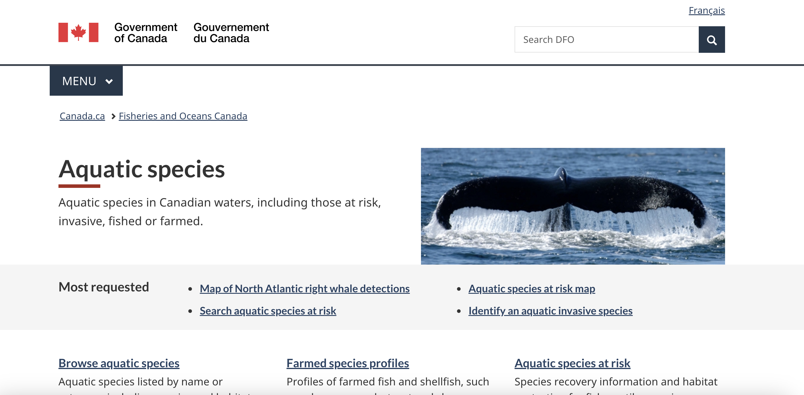
Project Overview
My team and I redesigned the Fisheries and Oceans (DFO) website, with a primary focus on the Aquatic Species page and the pages inside it. Our client was the Fisheries and Oceans Canada (DFO), a government department responsible for safeguarding Canada's waters and managing its fisheries resources. The goal of the project was to improve the overall user experience by making information more accessible and easier to navigate. Our process included conducting user research, developing a new sitemap, and creating wireframes to enhance the website's usability. My contributions specifically involved designing the tree test structure, analyzing the results, and producing all wireframes for the revised sitemap.
The Problem
The primary issue with the existing website was its difficulty in navigation, particularly for users unfamiliar with the subject matter. Despite containing a large amount of valuable information, the content was poorly organized, making it hard to locate and understand. This lack of structure created frustration for users and often prevented them from successfully finding what they were looking for.
About the Website
Purpose of the website
The Aquatic Species section is intended to provide information about aquatic species found in Canadian waters,
including those that are fished, farmed, invasive, or at risk. Its purpose is to support conservation, regulation,
monitoring, and public education by giving users, stakeholders, and decision-makers access to species profiles,
risk and recovery information, invasive species regulations, and more.
Target Users
- Students - to gather information for academic research
- Environmental researchers/scientists - to access the latest research and data
- Government officials/Policy makers - to make informed decisions based on the available information
- General public - to find information about aquatic species and their conservation, to report sightings
- Locating profiles on specific aquatic species.
- Reporting sightings of invasive species/incidents.
- Obtain relevant research publications.
- Identifying (invasive) species.
Inventory
First, we conducted a comprehensive inventory of the existing content and structure of the Aquatic Species page. This involved cataloging all the pages, links, and content elements down to the 5th level of the website. However, considering users' needs that involved high anxiety and an anomalous state of mind, this site might not be able to support users well based on the excessive amount of information being displayed and the lack of certain information scents in places that could help guide the users. These are the summaries of some issues across the site:
- Many content-heavy pages lack a table of contents section
- Unclear link name - the site uses “Aquaculture Sector Snapshot” for the “Search Aquaculture Farmed Species” page.
- Mismatch link name - the site uses “Aquaculture Science Programs” for the “Scientific research on cultured mussels” page.
- The “Aquatic species at risk” page provides many links to crucial funded programs, but the description under this page doesn't mention them.
- The contents between the “Apply for funding” and the “Grant funding” page under the Canada Nature Fund for Aquatic Species at Risk overlap and are written differently. Also, while the application in the “Apply for funding” is closed, the other in “Grant funding” is still open.
- There are broken links located on “Commercial fisheries for Atlantic seals” and “Interesting facts - Shark Research” - pages that return error 404.
- The “Shark sighting” page has a link to a PDF (presumably to report a sighting) that requires Adobe Reader 8 or higher (however, other PDFs do not).
Link to Inventory
Card Sort
In order to better understand how users categorize and organize information,
we conducted an open card sort exercise. In this exercise, we recruited 12
participants to sort cards representing each page within our scope into categories
that make sense to them.
Participants' Prior Knowledge Level
Based on our results, we believe that some of the participants have certain prior
knowledge of the website's topic, but not all. Regarding participants with prior
knowledge, they usually grouped content-related cards with a distinct group name
that represents the overall content. While all the cards in one group are not
always strongly related, this type of participant showed their content expectation
for a label clearly. The picture below shows an example of the responses from a
participant in this category:
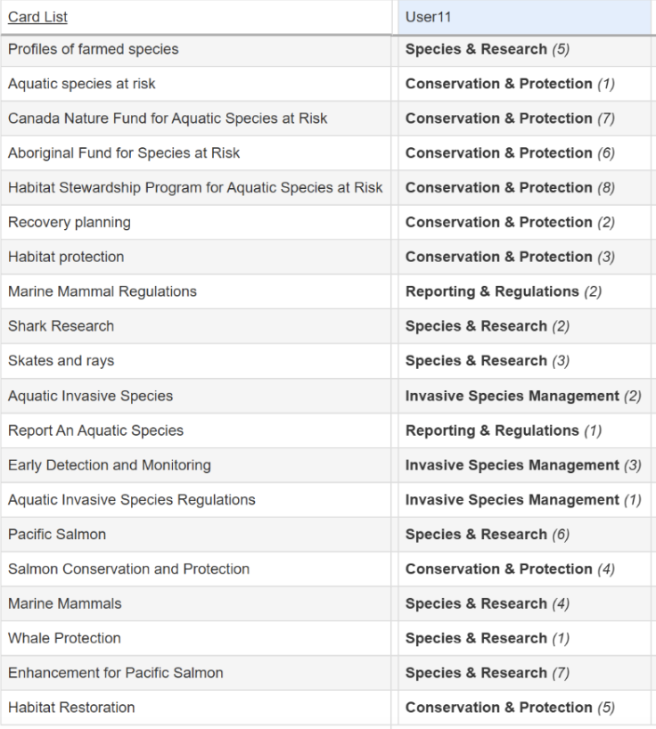
For participants with no or little prior knowledge of the website, their groups' names are more vague, the cards inside a group usually contain the same terms (those terms in most cases are also the group's name) and might not be content-related. The picture below shows an example of the responses from a participant in this category: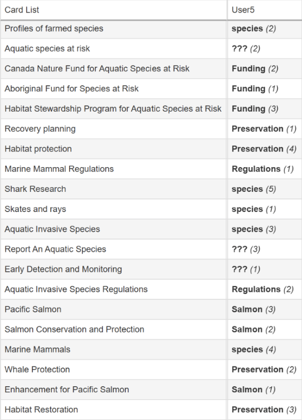
Participants' Label SuggestionsParticipants created a wide range of descriptive labels as well as topic-focused labels that reflected how they understood and interpreted the information presented to them. Many of the suggested labels were organized around types of animals (e.g., “Animals,” “Fish,” “Marine Mammals,” “Shark,” “Pacific Salmon”), while others focused on issues and actions related to conservation, such as “Conservation and Protection,” “At Risk (and Invasive),” “Threats and Management,” and “Protection and Restoration.” There were also several process-oriented or administrative labels like “Reporting and Regulations,” “Government Contact Needed,” and “Funding.” Participants tended to label groups in ways that reflected both the subject matter (specific species) and/or the type of work or management activity associated with them, showing that users naturally think about the content in terms of both biological categories and conservation efforts.
Recommendations for Content Organization and Labelling
Based on the Categories Table and the participant group names from our card sort results, users tended to create labels that reflect both the content type (e.g., funding, species, research) and the purpose (e.g., protection, conservation, or monitoring). Overall, five main labelling patterns appeared:
- Program-Based Labels and Funding: Many participants came up with categories including "Government Initiatives," "Species at Risk Funds," and "Funding Programs." These organizations typically had cards such as the Canada Nature Fund for Aquatic Species at Risk, the Habitat Stewardship Program for Aquatic Species at Risk, and the Aboriginal Fund for Species at Risk. This demonstrates how users can quickly locate and arrange programmatic or financial support-related items under a common administrative theme.
- Species or Animal Category Labels: A number of individuals came up with species-specific labels, including "Marine Animals," "Fish and Aquatic Life," or "Sharks and Rays." These groups frequently included Marine Mammals, Skates and Rays, and Shark Research. It suggests that people naturally categorize data according to biological or ecological principles.
- Conservation and Protection Labels: Some groups used terms like "Conservation," "Protection Initiatives," or "Environmental Programs" to highlight the program's goal or action. These grouped cards, like Early Detection and Monitoring and Salmon Conservation and Protection, reflect a goal-oriented approach.
- Research or Data-Oriented Labels: Groups were classified as "Research Projects" or "Data and Monitoring" by a smaller subset of users. Profiles of Farmed Species and Early Detection and Monitoring were frequently included in these categories, indicating that some participants link material to scientific or data-driven activities rather than subjects.
- General or Vague Labels (Low Domain Knowledge): Less precise names like "Water Information," "Wildlife," or "Environmental Stuff" were frequently used by participants who had no prior knowledge. These groups demonstrated less familiarity with the subject matter and fewer emotional linkages between the cards.
Tree Testing
Based on the results from the content inventory and card sort, our group was able
to notice some areas where the placement or label of the information might prevent
or cause confusion to users during their information-seeking process. Therefore,
we conducted two rounds of tree tests to learn more about the users' journey within the
site and evaluate the content's labels and arrangement. The results gained from
this tree test served as guidance for the sitemap redesign.
User Tasks and Aims
Among the main user tasks that we have predefined, there are two tasks that
we believe users might not experience a smooth process. We transformed those
tasks into informal scenarios to evaluate the users' journey.
- The first task aims to see how and where users expect to find information about the funding programs for species at risk. We provided the task “Imagine you work with a local conservation group that wants to help protect at-risk fish and marine species. You've heard there's government funding available to support these kinds of projects. Where would you look to learn how to apply?”. The correct path is starting from the “Aquatic species” page, then going to the “Aquatic species at risk”, where three funding programs are presented. We chose to include only one program in the tree as a representative for these programs, so users would have only one designated destination. With this task, we hope to gain evidence to prove that the main page lacks sufficient clues guiding users to find these funding programs, and also to see the real steps users take to gain the information.
- The second task aims to see how and where users expect to find the gate to report a species sighting or incidents. We provided the task “You are helping a friend who spotted a large marine animal stranded near the shore. Find out where you can report such a sighting and learn what kind of official response happens”. The correct path is starting from the “Aquatic species” page, going to the “Marine mammals”, and choosing “Report a sighting or incident”. With this task, we hope to evaluate whether the existing label provides sufficient clues to help users choose the right path in this high-anxiety situation.
Task 1: Finding Funding Programs
For task one in the first tree test, 66.7% of responses were correct, with four people getting to the answer directly and two indirectly. Most of the participants who got to the correct answer chose the shortest path (Home, Aquatic species at risk, Canada Nature Fund for Aquatic Species at Risk, Apply for funding).
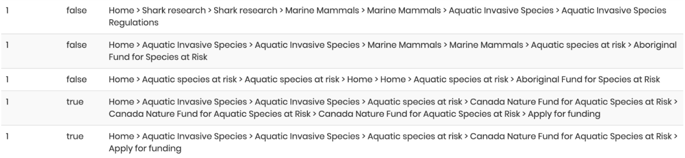
As seen in the above screenshot, some participants were unsure about their choices, so they went back and forth between different pages until they either got to the correct or incorrect answer.Task 2: Reporting a Species Sighting or Incident
For task two, again 66.7% of participants were correct, although this time only two people got to the answer directly, and four got to it indirectly, there were eight unique paths that the participants took to get to their answer. Their first stop was usually either “Marine Mammals”, “Aquatic Species at Risk”, or “Aquatic Invasive Species”. From there onwards, most participants appeared confident when picking their answer.
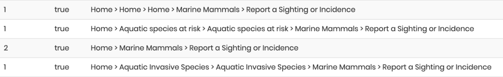
One of the participants struggled to find the answer and kept looking at different pages until they eventually found the answer. This shows that for some people, the location of the page “Report a Sighting or Incidence” was not clear until they clicked around.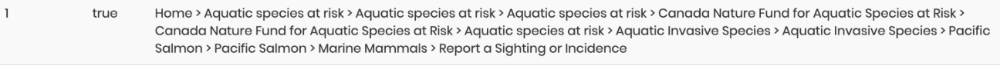
Second Tree Test AnalysisFor the second tree test, “Aquatic Species at Risk” was changed to “Aquatic Species at Risk & Funding Programs”, and “Marine Mammals” was changed to “Marine Mammals & Incidents”. This was so that for each respective task, the participants would not be confused as to where to find their answer, reducing back-and-forth navigation. Average time taken to complete task one and task two went from 38.5 seconds and 40.6 seconds respectively in the first tree test, to 24.7 seconds and 15.9 seconds in the second tree test. This tells us that our changes gave participants more clarity regarding where to go.
Task 1: Finding Funding Programs
For task one in the second tree test, 70% of participants were correct, with five getting to the answer directly and two indirectly, most of the participants who got to the correct answer also took the shortest path (Home, Aquatic Species At Risk & Funding Programs, Canada Nature Fund for Aquatic Species at Risk, Apply for funding).
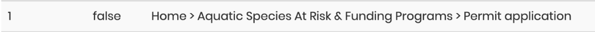
As seen above, one of the participants in this tree test appeared confused and navigated to the “Permit application” section, this appears to be due to the wording of our task. The wording, especially towards the end, might have caused the participant to be confused, and assumed that they needed to learn about permit application processes.Task 2: Reporting a Species Sighting or Incident
For task two in the second tree test, 70% of participants were correct with all of them getting to the answer directly, all of the participants who got to the correct answer also took the shortest path (Home, Marine Mammals & Incidents, Report a Sighting or Incidence).
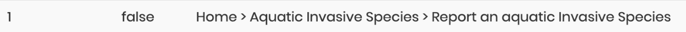
One of the participants who gave an incorrect response appeared confused, similar to what happened in task one. Our second task did not specify that the marine animal was non-invasive, thus confusing the participant and causing them to click on “Aquatic Invasive Species”.Sitemap Redesign
Based on the results of the card sort and the tree tests, the group decided to propose some changes to the structure of the site. Below is the sitemap representing the high-level structure after alterations are made. Refer to the “Notes” and “Legend” sections to understand the meanings of the terms and symbols used in the sitemap.
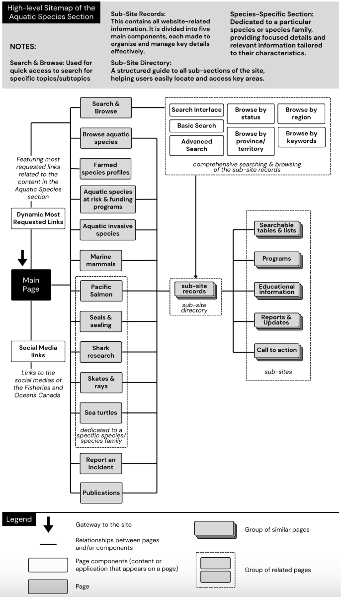
Principal Wireframes
Based on these tests and feedback, I implemented changes to the structure and visual hierarchy of the website. In order to visualize these changes, I created the following eight wireframes based on user feedback and both the card sort and tree tests.Level 1
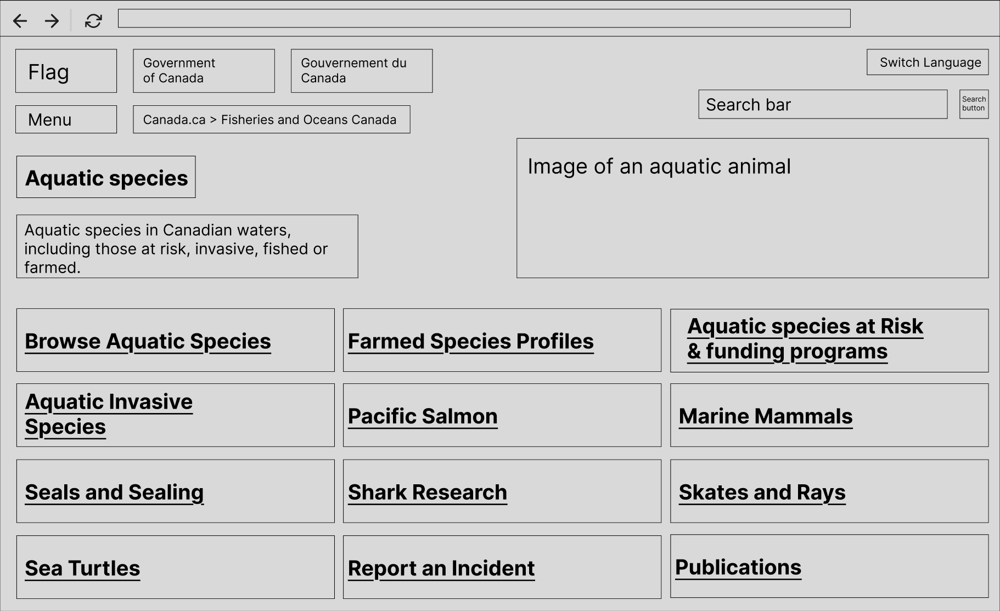
On the home page, I moved the breadcrumbs next to the menu instead of under it. This will allow users to find it more easily as the menu is one of the first things they will notice, and the navigation guide is within their line of sight. Another reason is that when the user opens the menu dropdown, the navigation breadcrumbs get covered by the menu. This ensures that it does not get hidden when users want to open the menu, making it more visible. I also removed descriptions under headings and instead added a hover menu (shown below). This means that the users will not be overwhelmed with a large amount of text. Additionally, I added “Report and Incident” based on our tree test results, as users were unsure of where to go when wanting to report an incident.Level 1 Hover Menu
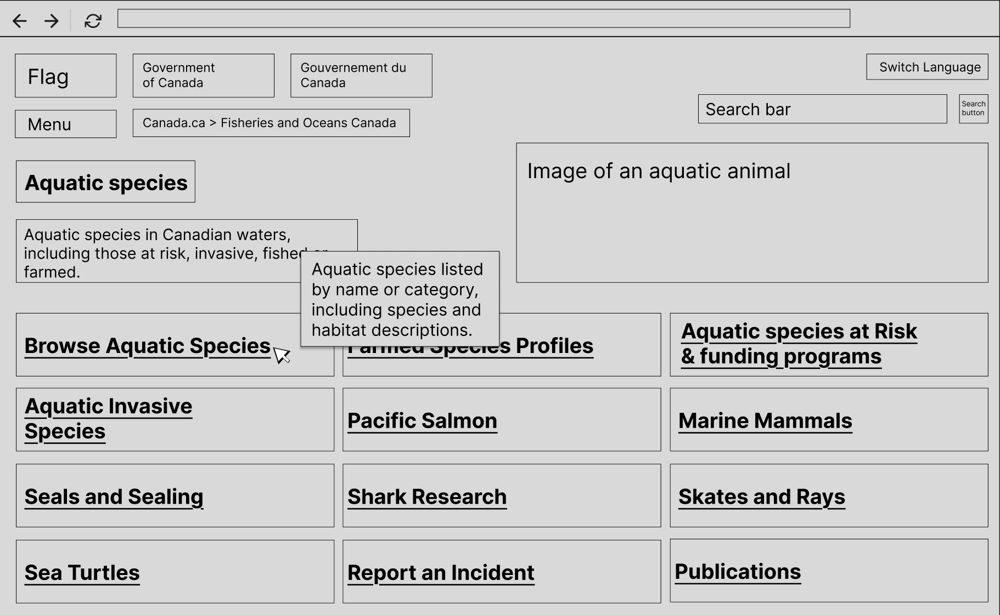
The hover menu replaces the descriptions that were found underneath the headings previously. This can be done by hovering over the heading with the cursor. This allows users to choose what information they want to see, and allows for the headings to stand out.Level 2
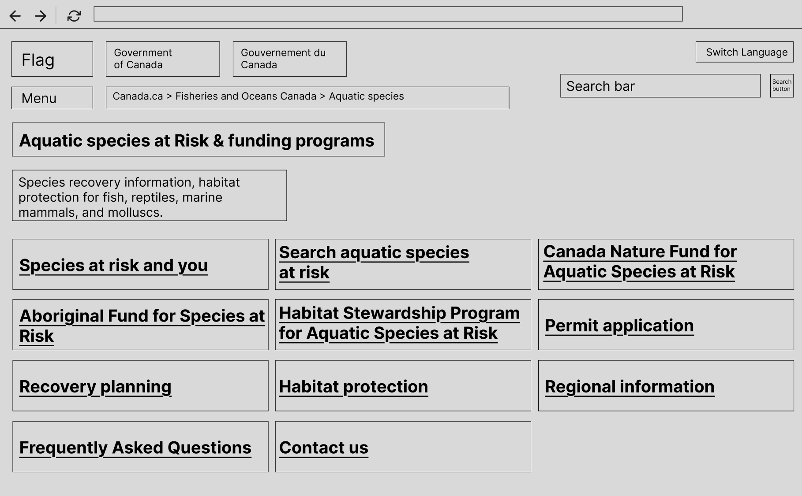
The level 2 design also follows the level 1 design, I again removed descriptions and instead aimed to implement a hover menu feature. For this heading, I also decided to add “Funding Programs” to the heading as it gives users more clarity regarding what is provided under the heading, and it also prevents users from getting lost or frustrated while trying to find funding programs.Level 3
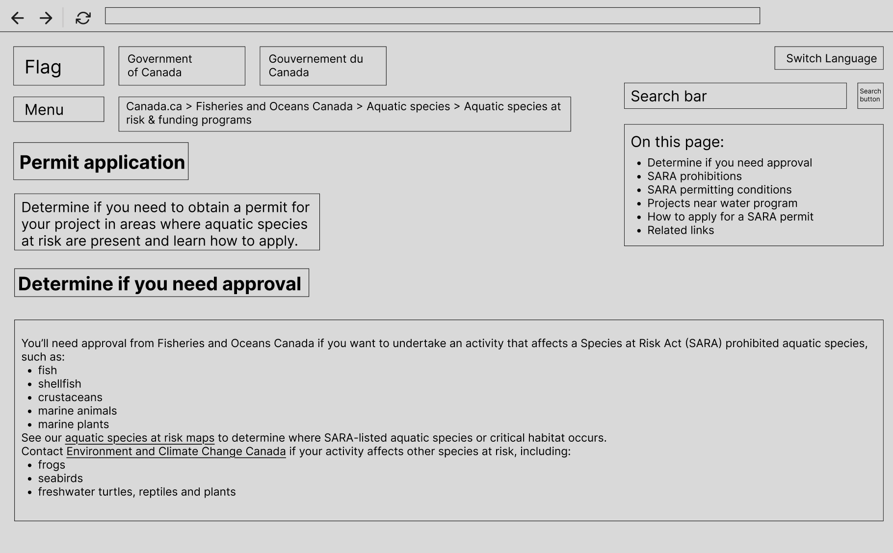
The level 3 redesign makes some visible changes to the design of this page, I changed the heading to just “Permit application” as the previous heading “Permitting under the Species at Risk Act” may be too technical for some users or confuse/intimidate them in other ways. I also moved the “On this page” menu to the right-hand side in order to streamline the users experience when navigating the page and provided information.Level 4
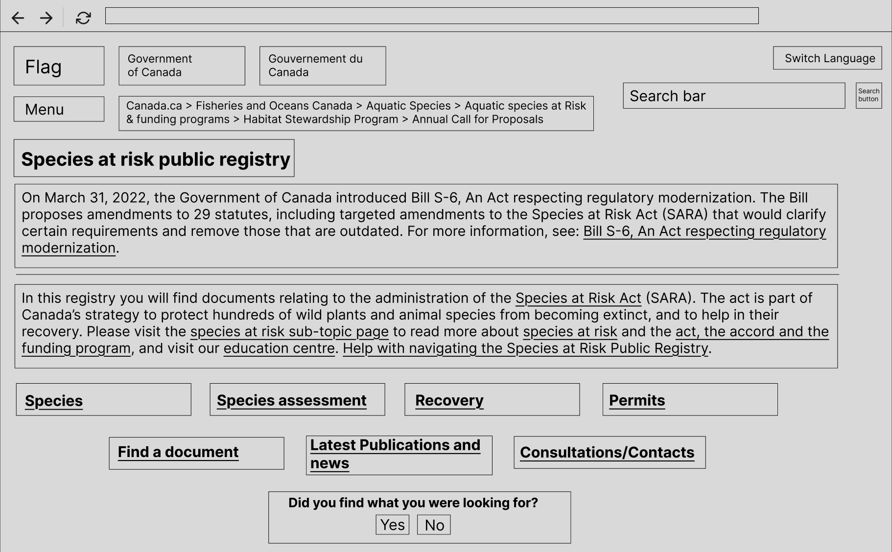
In the level 4 redesign, I chose to change the design of the public registry menu. The previous menu listed information below based on which heading was selected, this could have confused users, as they may not immediately know that they need to scroll down to see their desired information. Therefore, I added a menu with headings similar to the homepage and other levels. This will allow users to click on the heading they want to and see the desired information on a separate page.Level 5
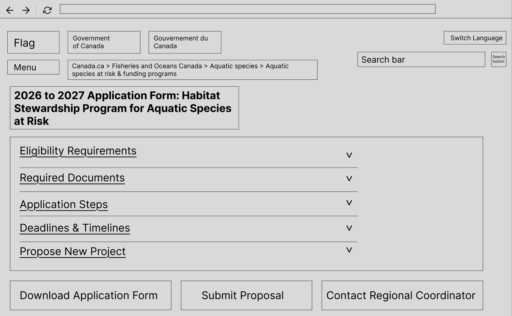
On the level 5 redesign, I decided to change the traditional structure of headings and descriptions to a dropdown menu design instead. I believe that this change was necessary as the information provided here is relevant to each other, and having to go back and forth between pages may frustrate users. The drop-down menu will instead allow them to stay on the same page while still being able to access the provided information.Search Function
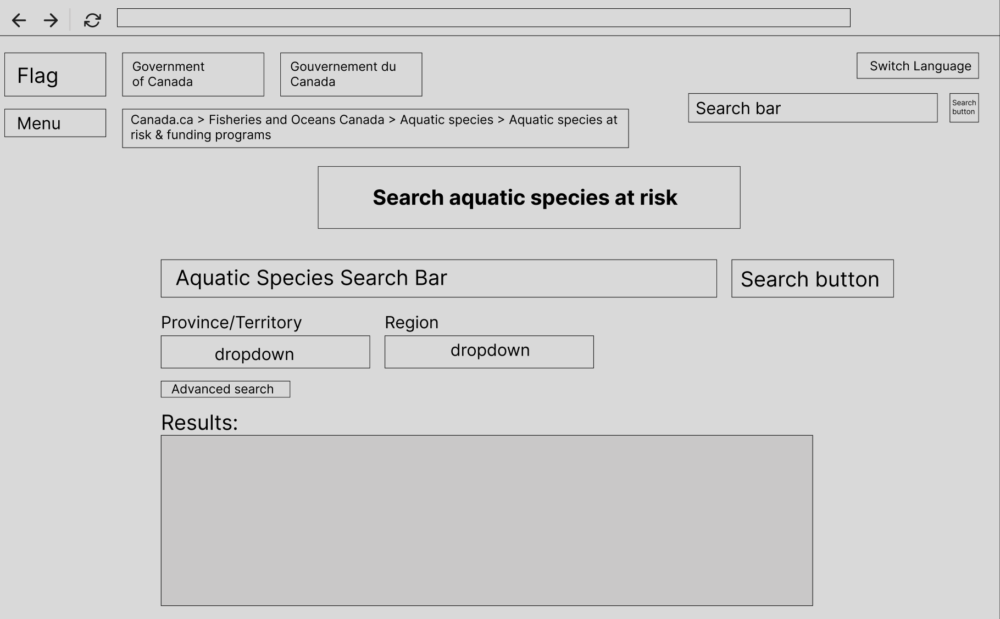
For the search page, I made many changes in order to simplify the overall experience. I found the original filtering function to be both confusing and limited in functionality. I re-designed it to be simpler and minimalistic while improving functionality. I did this by adding a large search bar right below the heading, making “Province/Territory” and “Region” the first filters users see. Additionally, I added an “Advanced search” function that will be explained in the section below.Advanced Search Function
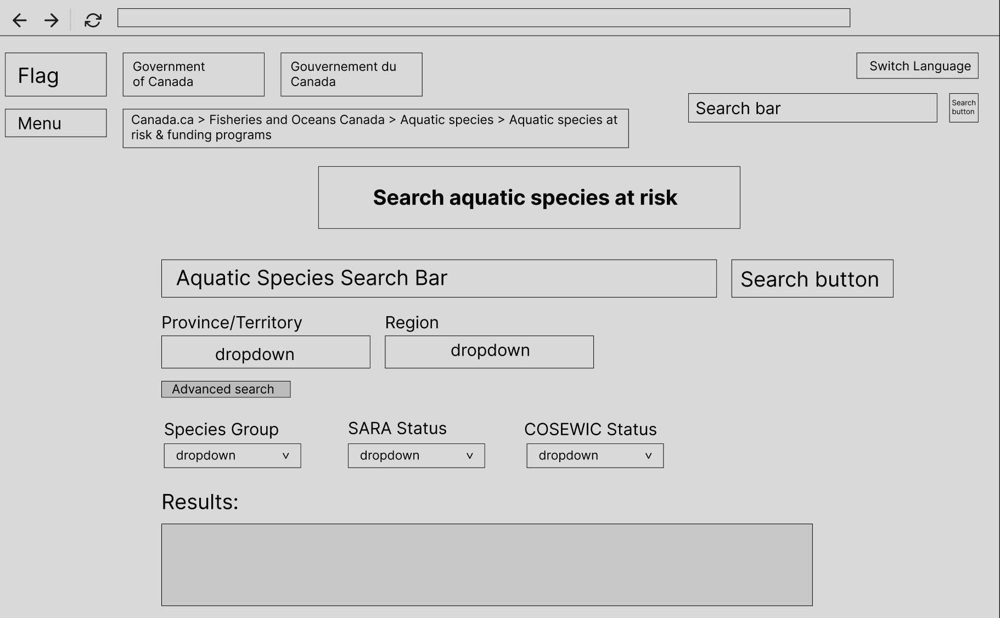
I added an “Advanced search” function below the two main filters for users who want more information. The “Advanced search” button opens up three dropdown menus:- The first one allows users to sort species by Species Group, which is a parameter not included in the original search page.
- The second one allows users to sort the species by their SARA status.
- The third one allows users to sort them by their COSEWIC status.
Recommendations for The Site's Restructure
Based on the content inventory, open card sort, and two rounds of tree testing, the Aquatic Species section should be restructured to better match users' mental models and reduce the confusion observed in testing. Users consistently organized content either by species or by program/action, and the new structure reflects that. All examples referenced below correspond to the provided wireframes.Navigation Recommendations
Global Navigation
Users expect clear divisions between species information and program information. The revised global navigation (Level 1 wireframe) includes the following top-level categories:- Aquatic Species
- Aquatic Species at Risk & Funding Programs
- Marine Mammals & Incidents
- Aquatic Invasive Species
- Pacific Salmon
- Publications
Local Navigation
Local navigation on secondary pages (Levels 2-3) makes key tasks immediately visible:- Apply for Funding
- Report an Incident
- Determine if You Need Approval
- Recovery Planning
- Species Profiles
Contextual Navigation
Contextual links appear in sidebars and “On This Page” modules, pointing to related resources such as maps, required documents, and regional contacts. Card-sort results showed users expect species content and related actions to appear together, making contextual links essential.
Utility Navigation & Breadcrumbs
Utility elements (search bar, language toggle, Government of Canada branding) appear at the top of each template. Breadcrumbs were kept because users can easily get lost in sites like this one, with many levels and branches in the hierarchy. They provide constant orientation and support backtracking without restarting.-
Search System Recommendations
Global Search
To improve searchability, we recommend:- Autocomplete for species
- Spell-tolerant matching
- Filters for region, species status, invasiveness, and content type
Species-specific Search
A dedicated species search page (Search Function wireframe) includes:- Filters for conservation status, invasiveness, region, and species category
- Results displayed as species cards
- A final species profile page with related actions and documents
-
Metadata & Controlled Vocabulary Recommendations
Dublin Core (Administrative Content)
Used for funding programs, regulations, permits, and educational pages. Matches Government of Canada metadata standards and supports consistent labelling across general content.
Darwin Core (Species Content)
The international biodiversity metadata standard, ideal for species profiles, invasive species, sightings, and habitat information. Relevant fields include:- scientificName
- taxonRank
- occurrenceStatus
- habitat
- waterBody
- eventDate / individualCount
Controlled Vocabularies & AI Tagging
Recommended vocabularies: ITIS, WoRMS, and Environment Canada subject thesaurus. Optional AI-assisted tagging can speed up metadata creation, with human review ensuring accuracy.